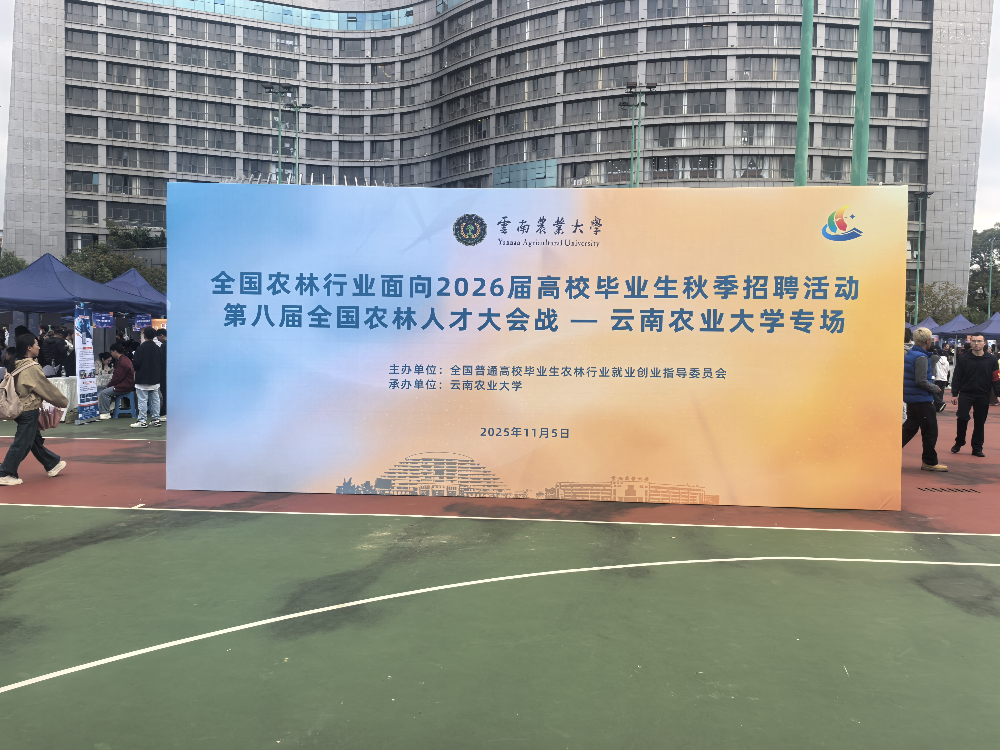
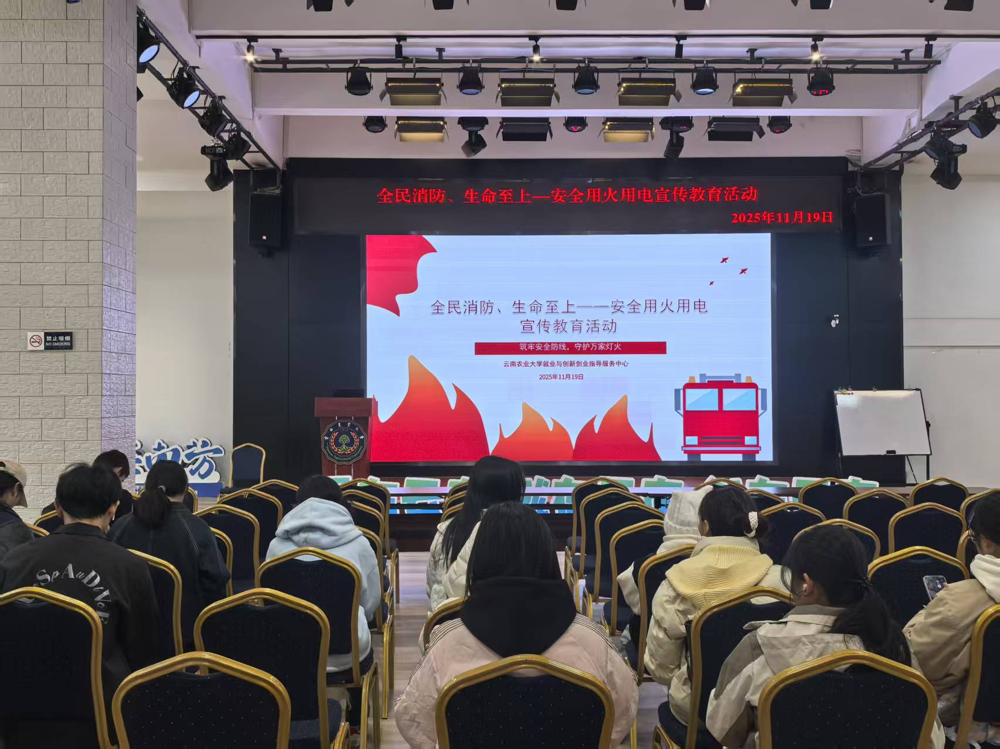
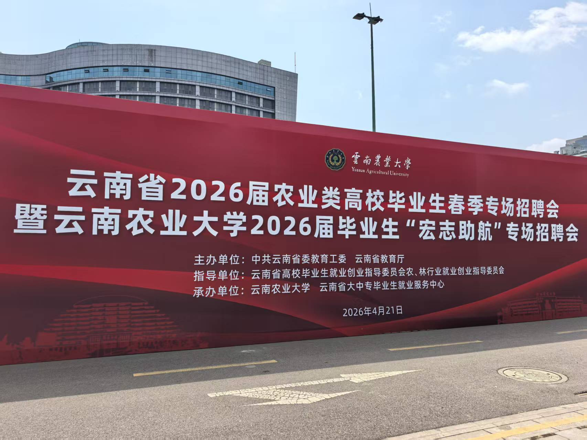

面向在校学生与毕业生，提供更有组织性的就业服务支持。
2013年最缤纷社团
云南农业大学就业与创新创业指导服务中心指导社团
就业创业互助协会
连接招聘服务、职业成长与校园协同，
让每一次就业创业实践都更有方向感。
成立于 2005 年 3 月 1 日，长期协助开展就业指导、档案管理、招聘会组织与品牌赛事服务。
2005成立时间
6职能部门
21届+成员传承
就业服务核心特色
01协会简介
我们是谁
把就业服务做细，
把成长路径做实。
云南农业大学就业创业互助协会是隶属于云南农业大学就业与创新创业指导服务中心的学生社团组织，于 2005 年 3 月 1 日成立。
协会主要协助开展日常就业指导与档案管理服务，承办模拟招聘大赛、职业生涯规划大赛及“对话职场”系列活动，并协助组织校园招聘会及毕业生档案整理等工作。
截至 2026 年，协会已历经二十一届成员，下设办公室、就业信息部、网络媒体部、活动组织部、学分考勤部、档案整理部等部门。协会自成立以来，协助学校开展了多项就业创业服务工作，并于 2013 年在新浪网云南最美高校网络评选中被评为“最缤纷的社团”。
兼顾职业规划、招聘活动协助与毕业服务场景。
既强调分工协同，也重视成员交流、互助与成长。
02部门组成
组织结构
六个部门，
共同托起就业服务的日常运转。
从值班沟通到媒体运营，从活动保障到档案整理，每个部门都在为校园就业创业服务链条提供稳定支撑。
办公室
通过学生助理值班排班、接听来电，方便在校学生与毕业生、公司咨询就业等相关事务。
值班统筹就业信息部
针对学生与公司关于就业及就业活动的详细内容进行信息处理与就业指导。
信息处理网络媒体部
负责运营与编排文章内容，持续在公众号“云农就创”上做好传播与展示。
宣传运营活动组织部
保障协会日常活动安排有序推进，并做好活动耗材与执行细节的稳定支持。
活动执行学分考勤部
对校内与协会内部成员的学分派发与考勤进行记录、整理与管理。
记录管理档案整理部
承担学校档案集中管理与审查相关工作，是协会服务链条中的重要支撑部门。
档案服务03精彩瞬间
协会日常
在服务与协作之间，
留下真实的社团温度。
就业服务并不总是严肃的，它也体现在成员协作、活动筹备、氛围建设和彼此支持的细节里。
04精彩活动
品牌活动
从成员凝聚到招聘协助，
协会把“行动力”落到现场。
这里既有社团内部建设活动，也有服务学校就业工作的执行现场，体现协会“互助”与“服务”的双重角色。

专场招聘会
推进企业入校招聘，促进毕业生积极就业，推动校企合作，增进在校大学生工作与就业热情。
企业入校 · 校企联动 · 就业推进协会篮球赛
通过篮球赛的方式增进协会成员内部友谊，促进团结，增强体魄，提升集体凝聚力。
成员互助 · 团队凝聚
安全用火用电宣传教育活动
增强用火用电安全意识，提升协会成员安全教育水平，让服务工作建立在更稳妥的组织基础上。
安全教育 · 日常保障
企业招聘会
协助召开云南省 2026 届农业类高校毕业生春季专场招聘会暨云南农业大学 2026 届毕业生“宏志助航”专场招聘会，配合学校推进就业工作。
招聘协助 · 就业服务05荣誉平台
发展积淀
荣誉不是点缀，
而是长期服务留下的印记。
协会在就业创业服务实践中积累了稳定的外部认可与平台基础。这些证书和共建平台，强化了协会作为校园就业创业服务组织的专业辨识度。
理事单位云南省高校毕业生就业促进会
实践基地大学生就业与创新创业教育实践基地
国家级创新创业教育实践基地
校企合作福建省南安市校企合作共建单位